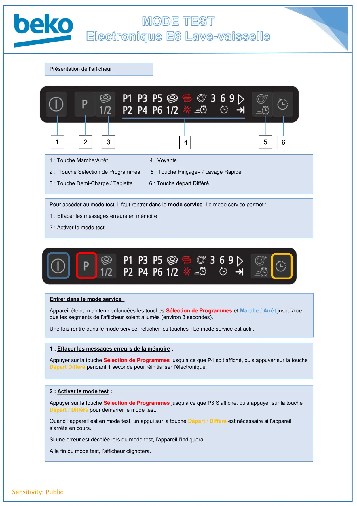
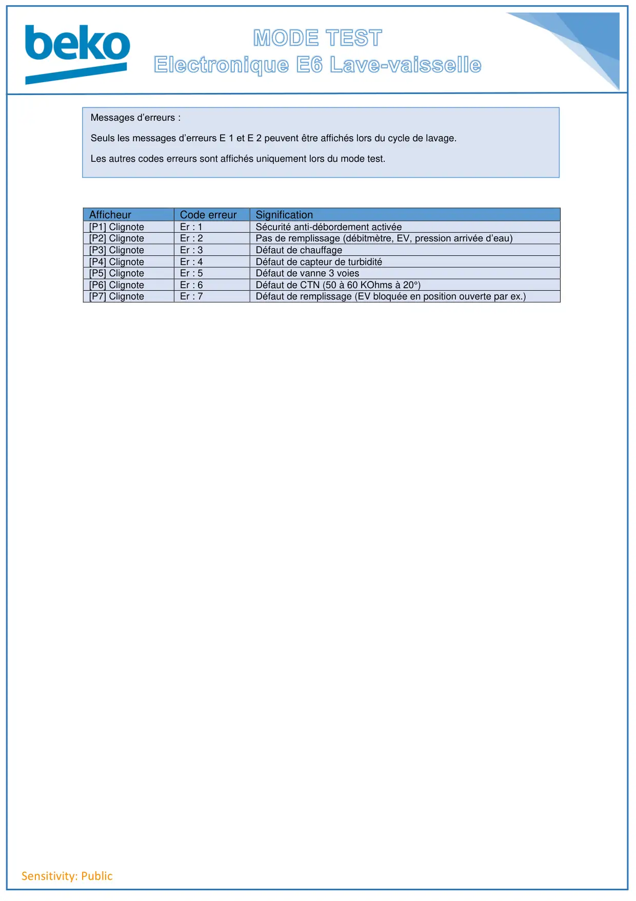

Mode test lave vaisselle E6

Sensitivity: Public4123651 : Touche Marche/Arrêt 4 : Voyants2 : Touche Sélection de Programmes 5 : Touche Rinçage+ / Lavage Rapide3 : Touche Demi-Charge / Tablette 6 : Touche départ DifféréPrésentation de l’afficheurPour accéder au mode test, il faut rentrer dans le mode service. Le mode service permet :1 : Effacer les messages erreurs en mémoire2 : Activer le mode testEntrer dans le mode service :Appareil éteint, maintenir enfoncées les touches Sélection de Programmes et Marche / Arrêt jusqu’à ceque les segments de l’afficheur soient allumés (environ 3 secondes).Une fois rentré dans le mode service, relâcher les touches : Le mode service est actif.2 : Activer le mode test :Appuyer sur la touche Sélection de Programmes jusqu’à ce que P3 S’affiche, puis appuyer sur la toucheDépart / Différé pour démarrer le mode test.Quand l’appareil est en mode test, un appui sur la touche Départ / Différé est nécessaire si l’appareils’arrête en cours.Si une erreur est décelée lors du mode test, l’appareil l’indiquera.A la fin du mode test, l’afficheur clignotera.1 : Effacer les messages erreurs de la mémoire :Appuyer sur la touche Sélection de Programmes jusqu’à ce que P4 soit affiché, puis appuyer sur la toucheDépart Différé pendant 1 seconde pour réinitialiser l’électronique.
1 / 2
Sensitivity: PublicAfficheurCode erreurSignification[P1] ClignoteEr : 1Sécurité anti-débordement activée[P2] ClignoteEr : 2Pas de remplissage (débitmètre, EV, pression arrivée d’eau)[P3] ClignoteEr : 3Défaut de chauffage[P4] ClignoteEr : 4Défaut de capteur de turbidité[P5] ClignoteEr : 5Défaut de vanne 3 voies[P6] ClignoteEr : 6Défaut de CTN (50 à 60 KOhms à 20°)[P7] ClignoteEr : 7Défaut de remplissage (EV bloquée en position ouverte par ex.)Messages d’erreurs :Seuls les messages d’erreurs E 1 et E 2 peuvent être affichés lors du cycle de lavage.Les autres codes erreurs sont affichés uniquement lors du mode test.
2 / 2